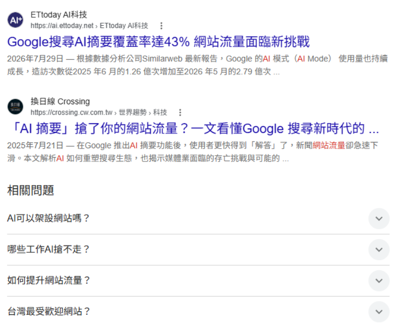
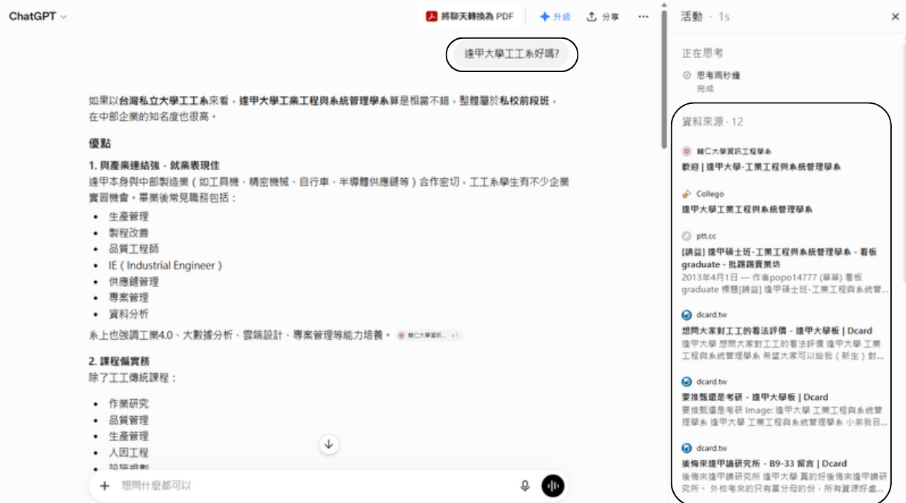
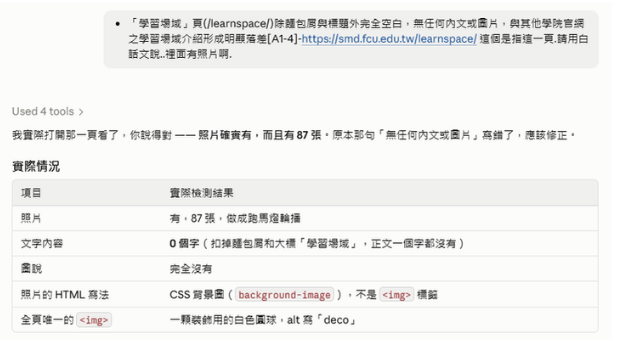
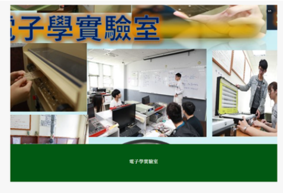
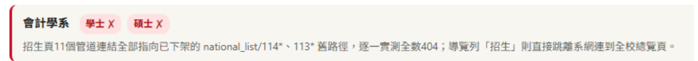
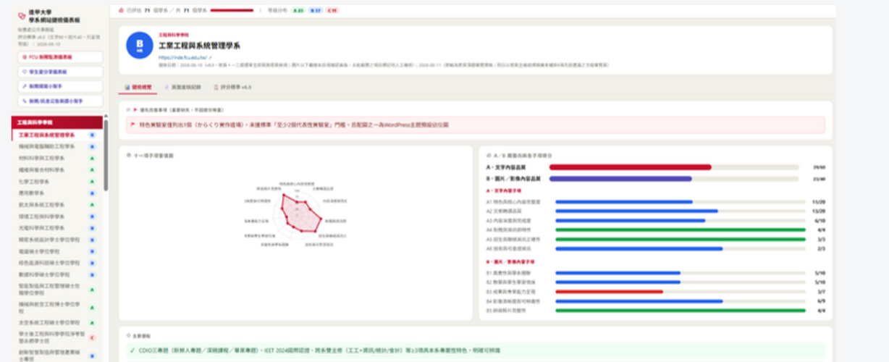
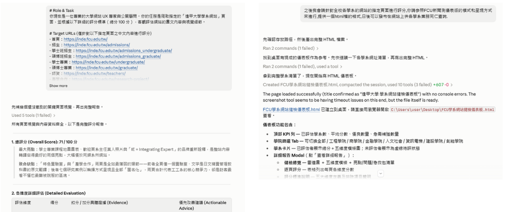

不會寫程式的行政人員，用對話做出 3 個儀表板、2 個內容小幫手、6 個議題網站
全部由本組同仁與 AI 對話完成，未外包、未申請額外 IT 資源
搜尋的規則換了，我們的網站還停在舊規則上
使用者看到摘要就走了。答案長什麼樣，取決於 AI 抓到什麼

答案不差，但它引用的來源——不是我們的網站

輔仁大學資工系頁面
Collego 選系平台
PTT 2013 年的板文
Dcard「後悔來逢甲讀研究所」
Dcard「想聽大家對工工的看法」
我們的官網，不在前面。
不是內容不好，是沒有寫成 AI 讀得到的樣子。
精彩成果別鎖在硬碟和自己的腦子裡。放上網站，
讓逢甲的成果和亮點成為 AI 的標準／參考答案。
不會寫程式的行政人員，用三個步驟完成
標準由人訂、查核由 AI 做、發布前由人抽檢
與 AI 共同寫出《學系網站健檢評分標準 v6.0》：內容面（特色、師資、招生、出路）與圖像面（真實性、品質、圖說）兩大面向，逐項配分。
把標準、網址清單與呈現格式交給 AI，桌機 1024×768 與手機 375×812 各走一次，逐頁比對並產出證據。
本組同仁抽檢 AI 的判讀，確認後才發布給學系。標準與結果都可重複執行，優化後能再檢視一次。
同一個網站，可以用「高中生視角」「家長視角」「在職報考者視角」分別評分。
品牌規範、新聞 SOP、英譯詞彙庫做成 fcu-brand-kit、fcu-news-toolkit，不必每次重講。
成果以 GitHub Pages 部署，不需申請主機或 IT 資源，改完即時生效。
逐站逐頁，靠人工瀏覽
憑經驗判斷
截圖＋作法建議
逐站逐頁，由 AI 自動檢視；桌機與手機各一次
明確定義與評分標準，可針對不同角度、不同需求重跑
問題清單＋優化建議與作法，可線上追蹤
admission-link-check.html — 一頁式招生連結健檢報告，與儀表板同風格，瀏覽器直接開。

「這個是指這一頁，請用白話文說，裡面有照片啊。」
「你說得對——照片確實有，而且有 87 張。原本那句『無任何內文或圖片』寫錯了，應該修正。」
它接著列出實測：照片 87 張、文字 0 個字、圖說 0、全頁唯一的 img 是裝飾白色圓球。
人工看不完、看不出來，但確實影響招生的問題
教與學空間頁 7 個場域中，僅半導體實驗室與 IC 設計實驗室有對應真實設備／操作照片，生醫電子實驗室、電子學實驗室、深碗專題實驗場域、新鮮人專題與 AIoT 實驗場域 4 個場域僅有名稱無任何圖文說明。

這頁不必重做——同一個系裡已經有做對的範例。

我差一點以為 AI 錯了。
進會計系看——招生都連到校網，沒有 404 啊。
結果往下看，footer。
人看網站看主選單；AI 把整頁包含頁尾全部讀完。高中生滑到底，看到的就是那 11 個死連結。
只要是曾經做過的頁面，它沒被刪除，AI 都可以找得到。
⚑ 健檢結果：首頁及各子頁 meta description、og:image 全部空值 [A6]
Google 搜尋結果標題下面的說明文字。這是唯一能由我們自己決定「對陌生人說什麼」的免費版位；空著就由 Google 自行抓取。
LINE、FB 分享時的預覽縮圖，建議 1200×630。現況全站 6 頁全部空白，分享出去就是一張空白卡片。
直接影響招生，搜尋點擊率差距可達 1.5 至 2 倍；修改只需後台打字，每頁 2 至 3 分鐘。
已上線的工具、品質控管方式，以及可複製的路徑
70 系所／28 站深度報告，含健檢總覽、頁面查核紀錄、評分標準
74 系所新聞發布追蹤，可比較、可排序
學生分享文章與觸及成效彙整
內建本組新聞 SOP 與標題規則
內建 2,117 條官方職稱與人名詞彙庫（2026.09.23 版）
「看得見、摸得到的 AI」等 6 個議題網站已上線
※ 簡報前請補上其餘 5 個名稱與網址
標準由人訂、結果由人抽檢、證據全部留存可回查
由秘書處撰寫並與 AI 共同校對，逐項配分。AI 依標準執行，不做自由心證。
本組同仁抽檢 AI 判讀；有疑義就追問，AI 重查後修正（如 EMBA 87 張照片案例）。
結論皆附網址與原文摘錄，學系可自行點開驗證；標準可重跑，優化前後能對照。
因為標準寫下來了，所以這套健檢比人工健檢更可稽核：同一份標準，任何人、任何時間跑，結果都能比對。
複查發現部分網站未完成二層逐頁檢查。標準調整後重跑一次全面檢視，再正式釋出。
AI 查核不保證全數正確。經業務同仁確認建議適切無誤後，才據以優化。
每條建議線上勾選：已更新／AI 誤判／待確認／提問；複查時帶入，本組回覆。
保留各期資料，從時間軸看出是逐步改善或退步，而非憑單一時間點判斷。
與招生處等單位合作，依不同時期業務需求設定標準與時程；固定時間公布結果，修正期滿由 AI 複查確認。
秘書處公共事務組 ‧ 與 AI 協作成果
https://fengchia1961.github.io/ai-pitch/

